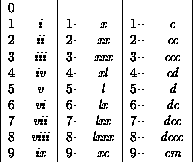

Using a SELECT CASE block and integer divison write a program that reads in a decimal number between 0 and 999 and prints out the equivalent in Roman Numerals.
Demonstrate that your program works with the numbers:
The output should contain no embedded spaces.

Hint: Use a CHARACTER string (or CHARACTER strings) to store the number before output. The `longest' number is 888, dccclxxxviii (12 characters).